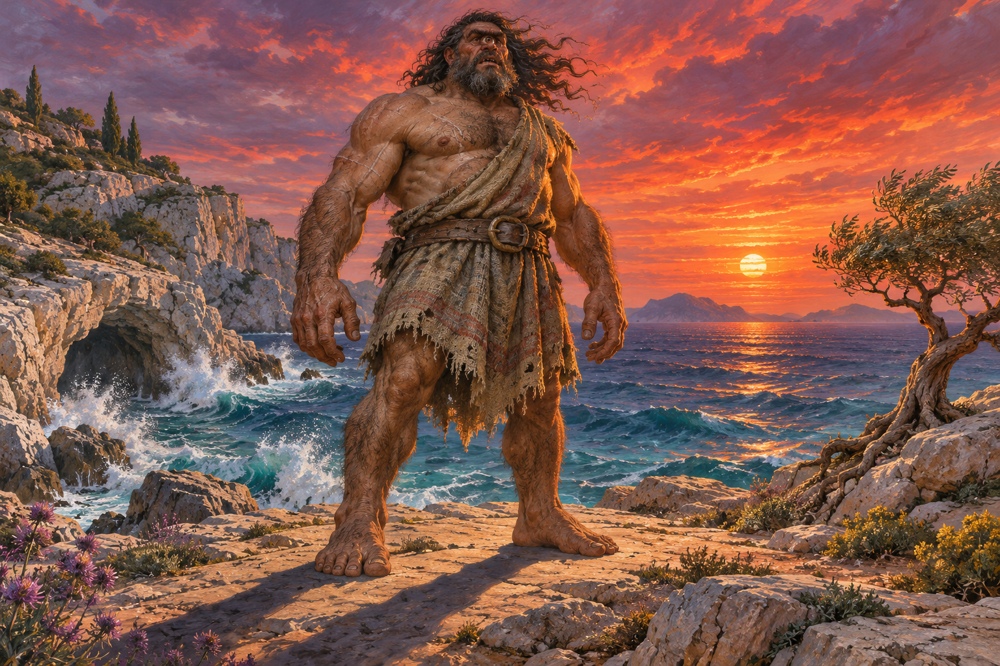
Cyclops
A one-eyed giant with incredible strength.
Type: Giant
Diet: Carnivore
Habitat: Islands
Weakness: Its single eye
Explore legendary creatures from across the realms

A one-eyed giant with incredible strength.
Type: Giant
Diet: Carnivore
Habitat: Islands
Weakness: Its single eye
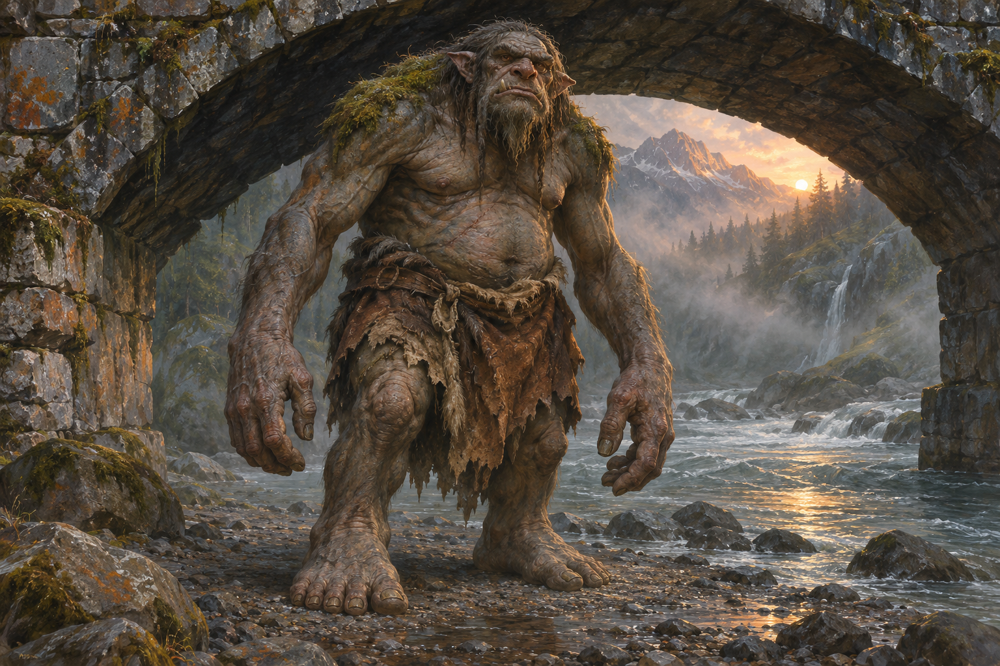
A huge, slow creature that turns to stone in sunlight.
Type: Giant
Diet: Omnivore
Habitat: Bridges and caves
Weakness: Sunlight
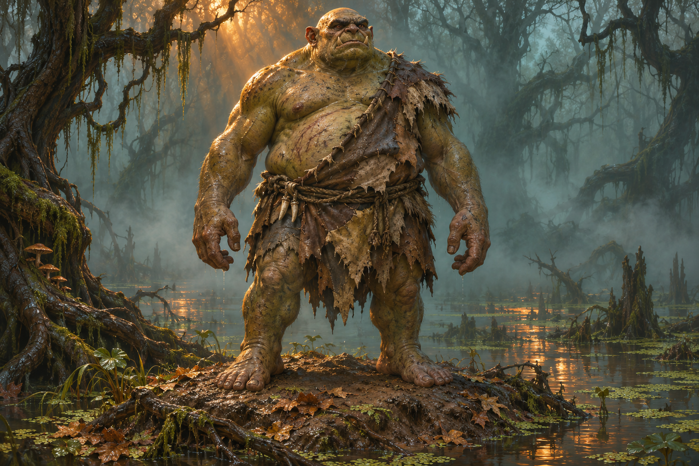
A massive, hungry brute that lives alone.
Type: Giant
Diet: Omnivore
Habitat: Swamps
Weakness: Trickery
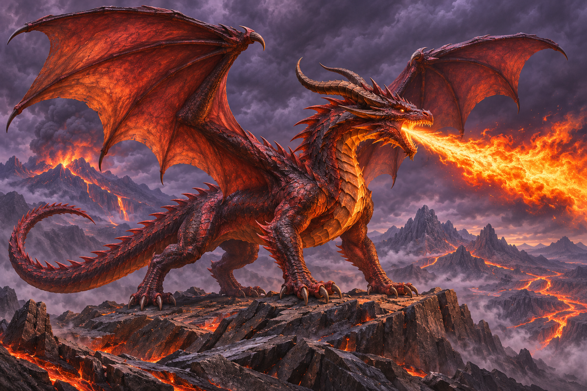
A powerful dragon that breathes fire.
Type: Dragon
Diet: Carnivore
Habitat: Mountains
Weakness: Ice magic
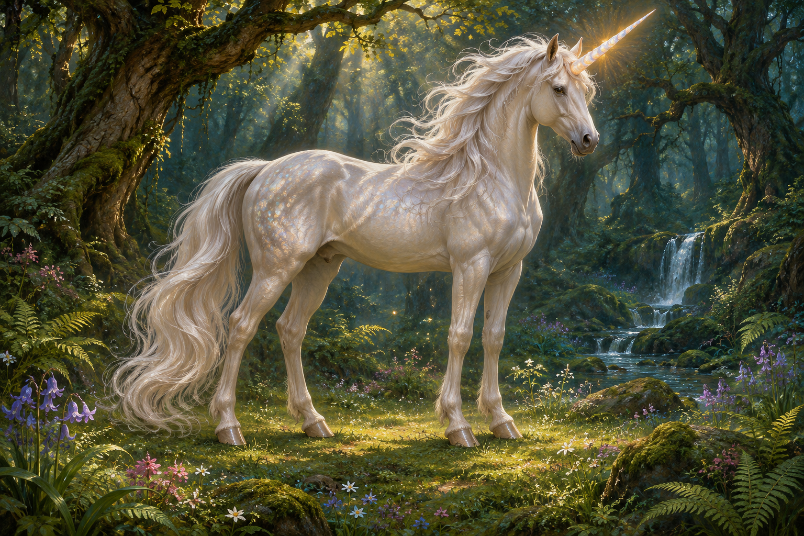
A graceful magical horse with a glowing horn.
Type: Mystic
Diet: Herbivore
Habitat: Enchanted Forest
Weakness: Dark magic
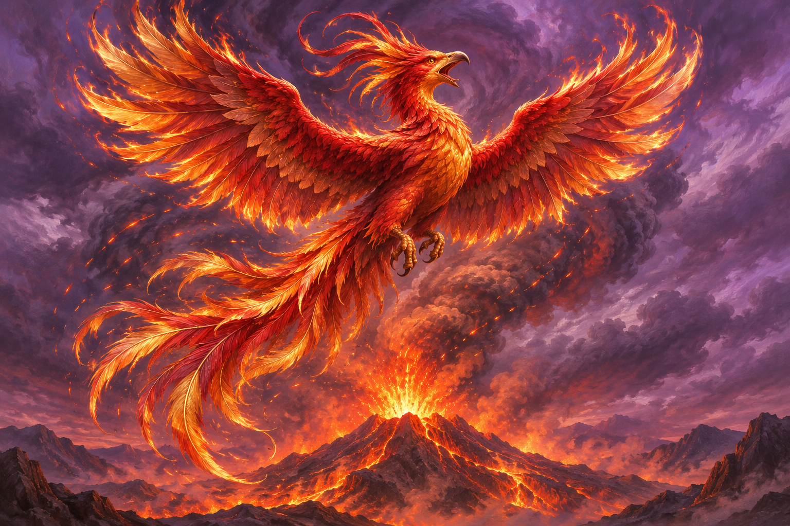
A fiery bird reborn from ashes.
Type: Mystic
Diet: Unknown
Habitat: Volcanoes
Weakness: Water
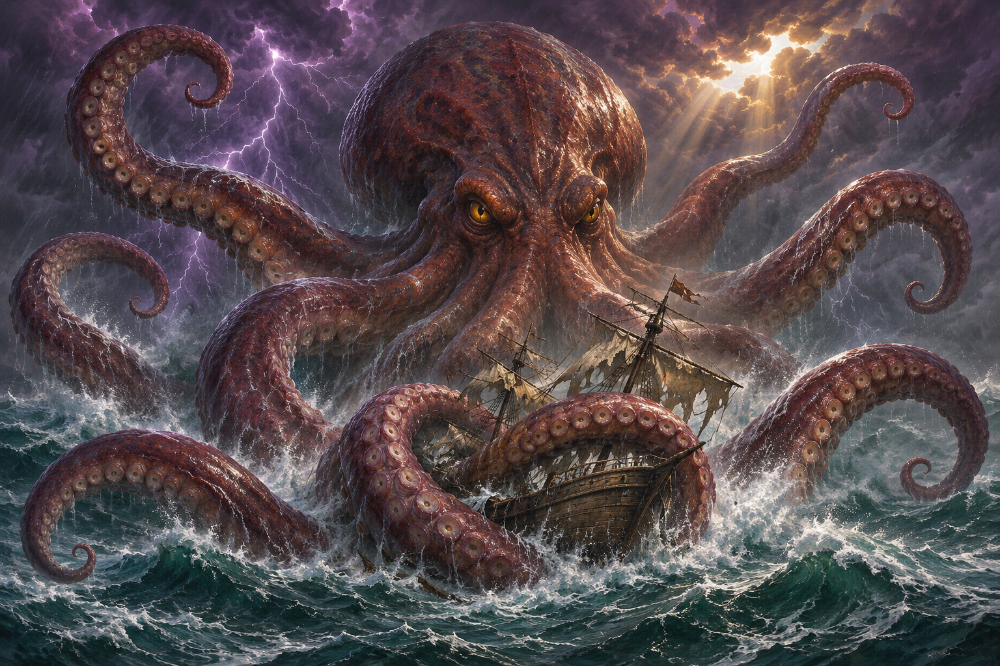
A giant sea monster lurking in deep waters.
Type: Aquatic
Diet: Carnivore
Habitat: Ocean
Weakness: Lightning
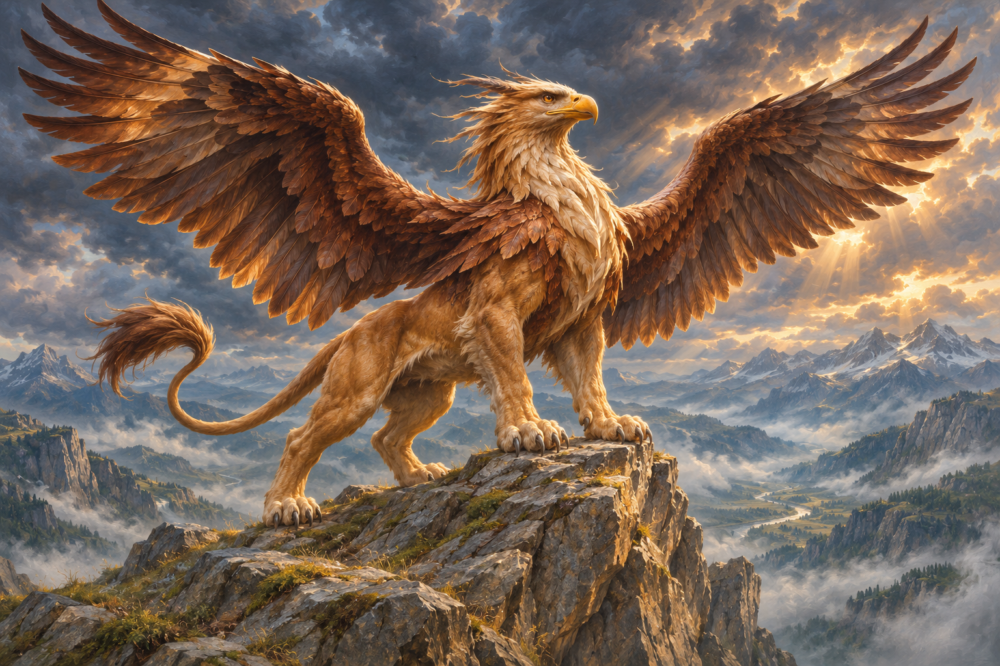
A majestic creature with lion and eagle traits.
Type: Beast
Diet: Carnivore
Habitat: Cliffs
Weakness: Poison
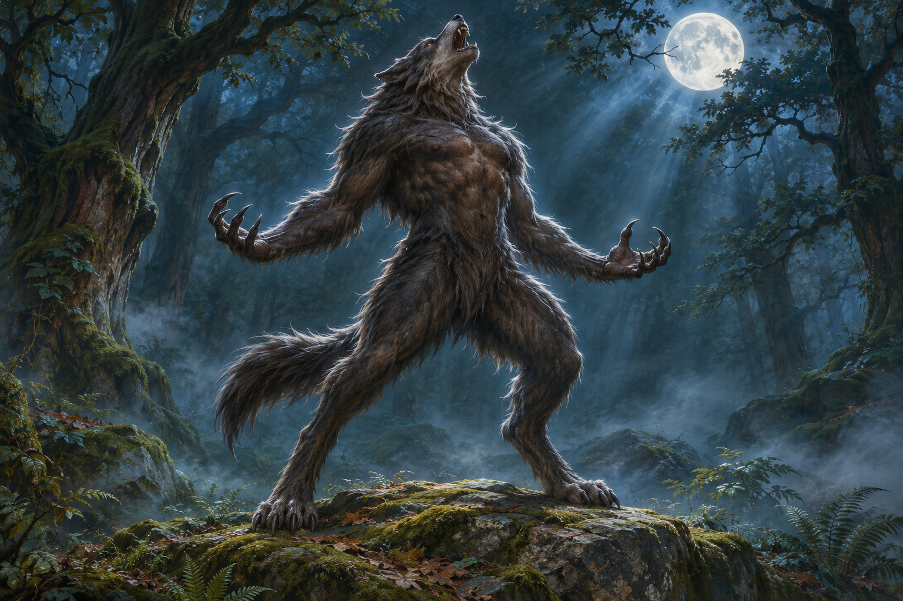
A cursed human transforming under the full moon.
Type: Beast
Diet: Carnivore
Habitat: Forest
Weakness: Silver
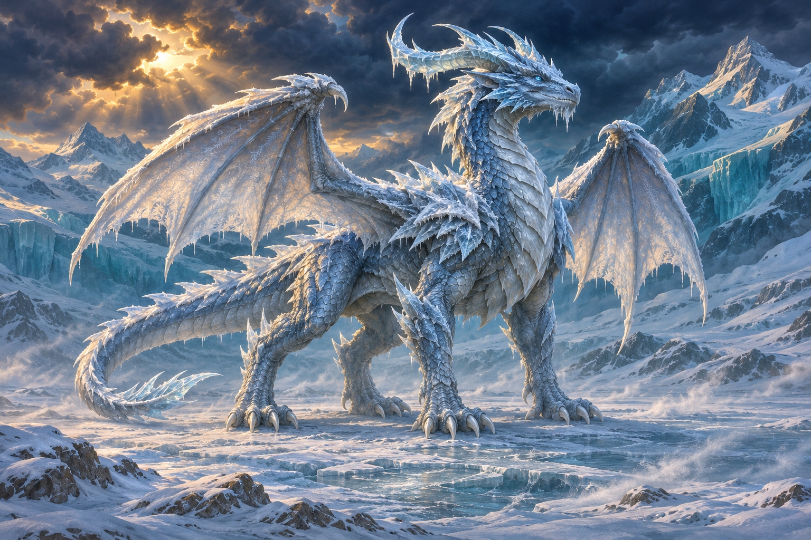
A frost-covered dragon from icy lands.
Type: Dragon
Diet: Carnivore
Habitat: Tundra
Weakness: Fire
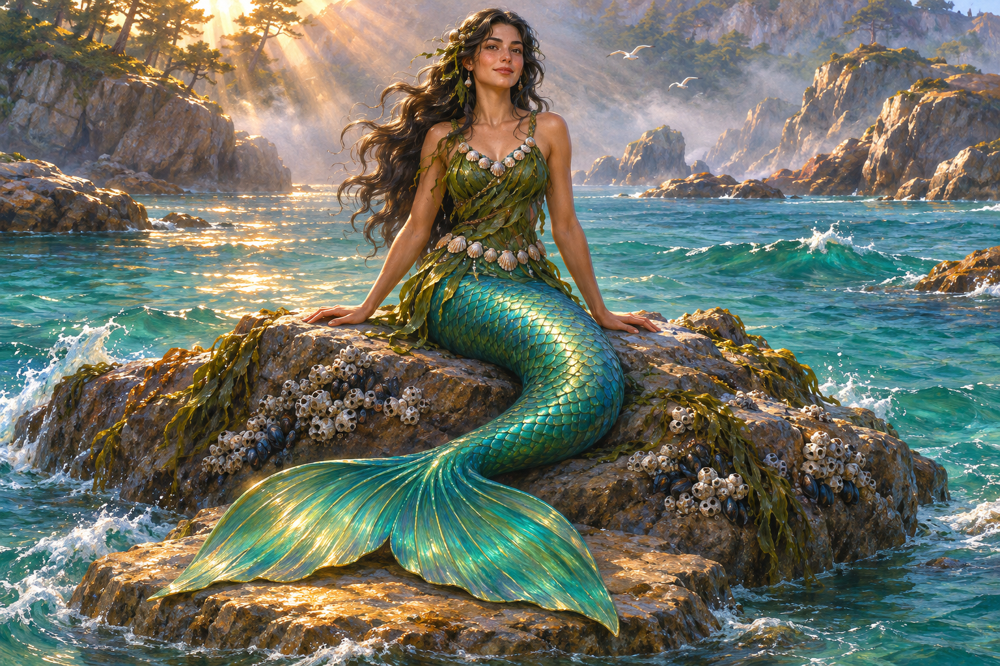
A half-human, half-fish ocean dweller.
Type: Aquatic
Diet: Omnivore
Habitat: Coral Reefs
Weakness: Sonar
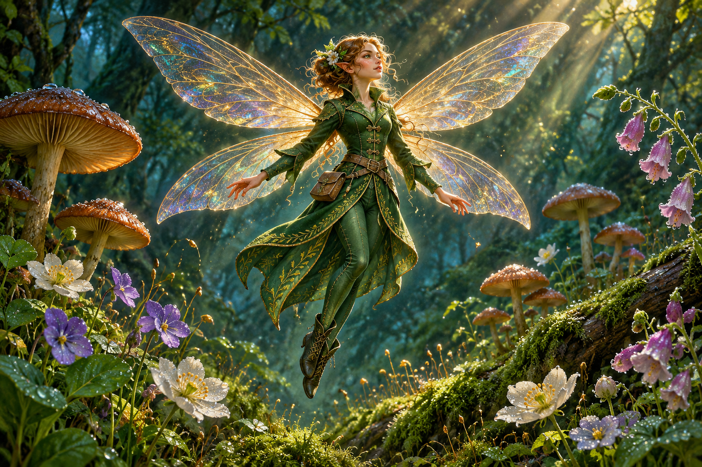
A tiny magical being with wings.
Type: Mystic
Diet: Nectar
Habitat: Forest
Weakness: Iron
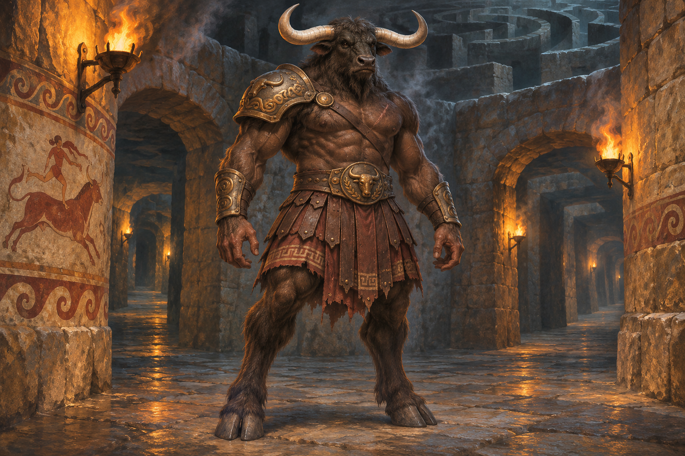
A bull-headed warrior trapped in labyrinths.
Type: Beast
Diet: Omnivore
Habitat: Labyrinth
Weakness: Illusion Magic
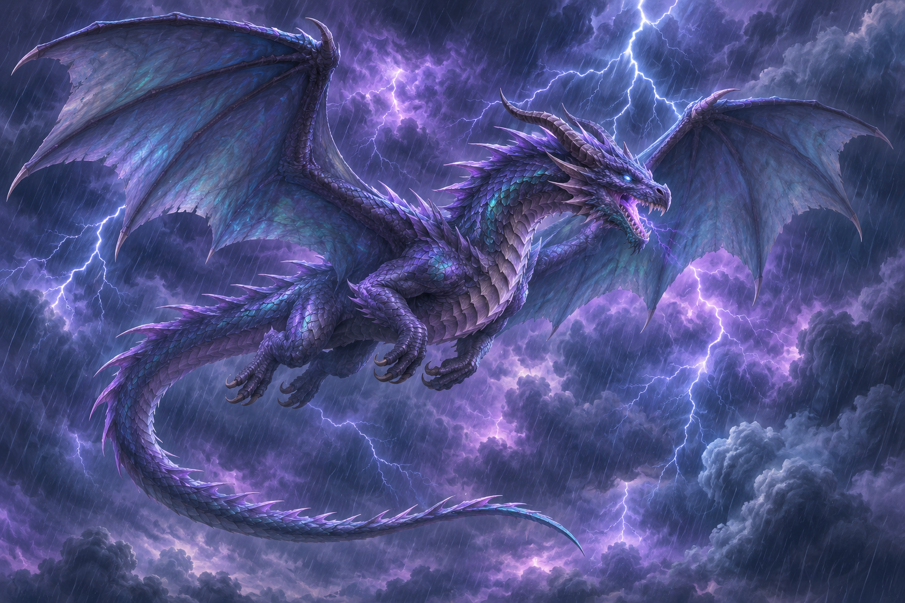
A dragon that commands thunder and lightning.
Type: Dragon
Diet: Carnivore
Habitat: Skies
Weakness: Earth magic
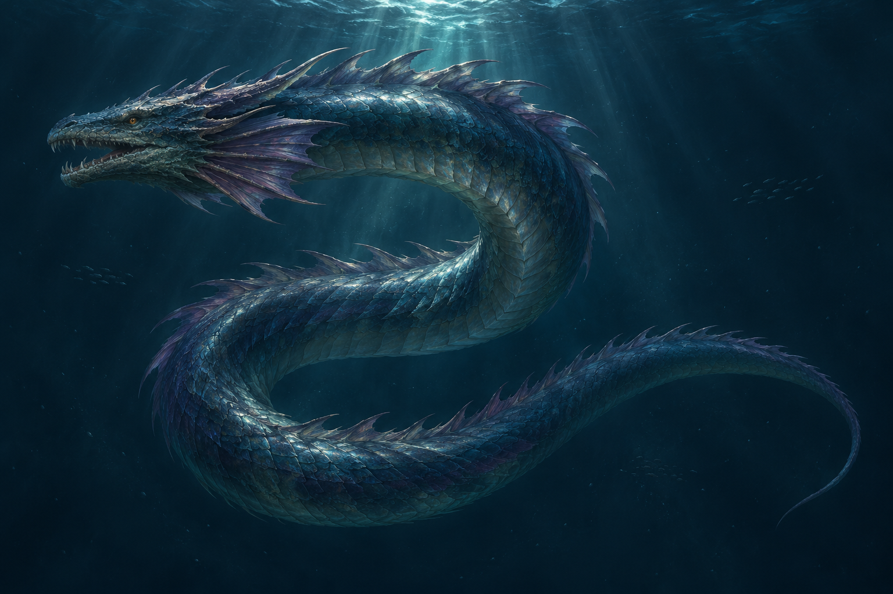
A colossal sea serpent of legend.
Type: Aquatic
Diet: Carnivore
Habitat: Deep Ocean
Weakness: Light magic